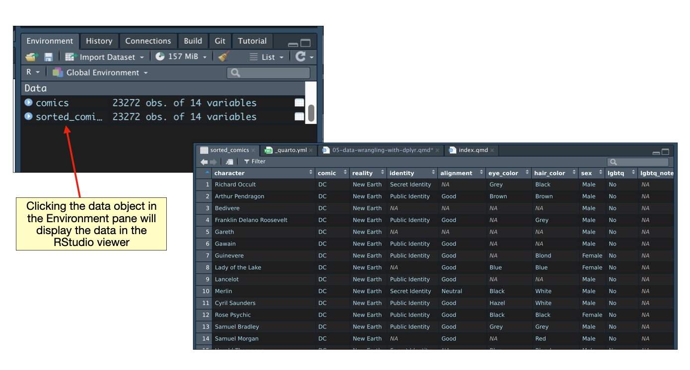

In this chapter, you will be learn about how to use functionality from the {dplyr} package to wrangle your data. Data wrangling is the catchall phrase that includes the processes of cleaning, structuring, and summarizing your data. It is a skill that every educational scientist needs to have in their computational toolkit!
We will use the comic-characters.csv data to illustrate how to use several data wrangling functions in order to answer a set of research questions about LGBTQ representation in comics.
Research Questions
Who was the first LGBTQ character?
Which year did that character first appear?
Did Marvel and DC introduce LGBTQ characters around the same time? Or was one company more progressive?
What percentage of comic characters identify as LGBTQ?
Did the percentage of comic characters identifying as LGBTQ change after the Pride Movement began?
How does the average number of appearances for comic characters identifying as LGBTQ differ from those who don’t?
To begin, we will load the {dplyr} and {readr} libraries, and import the data into an object called comics.
# Load librarieslibrary(dplyr)library(readr)# Read in datacomics =read_csv(file ="https://raw.githubusercontent.com/zief0002/modeling/main/data/comic-characters.csv")# View dataglimpse(comics)
Recall that functions work by taking arguments as inputs and then producing an output. For example, the glimpse() function takes the comics data frame as its input.
# View dataglimpse(comics)
We could get the same result by using the pipe operator (|>). This operator takes a DATA FRAME, or a tibble, (given immediately before the operator) and uses it as the FIRST argument in the function that comes immediately after the pipe operator.
# The pipe operator makes comics the first argument of the glimpse() functioncomics |>glimpse()
Note since the glimpse() function did NOT include any additional arguments, we do not include anything between the parentheses after we pipe. Here is another example that illustrate the use of the pipe operator.
# Count number of rows in comics data framenrow(comics)
[1] 23272
# Can be written using the pipe operator as...comics |>nrow()
[1] 23272
One last example will show how we use the additional arguments in the function following the pipe operator. For example, say we wanted to use the print() function to print the tibble/data frame, and we wanted to show all of the columns. The print() function would include not only the name of the tibble we wanted to print, but also the argument width=Inf. Here is the syntax for this:
# Print all columns of comics tibbleprint(comics, width =Inf)
Using piping, the syntax would be:
# Print all columns of comics tibblecomics |>print(width =Inf)
# A tibble: 23,272 × 14
character comic reality identity alignment
<chr> <chr> <chr> <chr> <chr>
1 "14" Marvel Earth-616 Secret Identity Bad
2 "88" Marvel Earth-616 Public Identity Bad
3 "99" Marvel Earth-616 Secret Identity Neutral
4 "107" Marvel Earth-616 Secret Identity Neutral
5 "'Spinner" Marvel Earth-616 Secret Identity Good
6 "\"Thumper\" Morgan" Marvel Earth-616 Secret Identity Bad
7 "11-Ball" Marvel Earth-616 Secret Identity Bad
8 "115 (Legion Personality)" Marvel Earth-616 Secret Identity Neutral
9 "181 (Legion Personality)" Marvel Earth-616 Secret Identity Neutral
10 "1X" Marvel Earth-616 Public Identity Good
eye_color hair_color sex lgbtq lgbtq_note alive appearances
<chr> <chr> <chr> <chr> <chr> <chr> <dbl>
1 <NA> <NA> Female No <NA> Living 1
2 Blue Blond Male No <NA> Living 3
3 Blue <NA> Male No <NA> Living 1
4 Green <NA> Male No <NA> Living 1
5 <NA> <NA> Male No <NA> Living NA
6 <NA> Bald Male No <NA> Living NA
7 <NA> <NA> Male No <NA> Living 1
8 Blue White Female No <NA> Living 1
9 <NA> <NA> <NA> No <NA> Living 1
10 <NA> Blond Male No <NA> Living 1
first_appear_date first_appear_year
<chr> <dbl>
1 1994, November 01 1994
2 1994, March 01 1994
3 1994, November 01 1994
4 1994, November 01 1994
5 2022, November 07 2007
6 1965, February 01 1965
7 1991, July 01 1991
8 2022, August 10 2010
9 2022, July 11 2011
10 1940, March 01 1940
# ℹ 23,262 more rows
Here, comics will be inputted as the FIRST argument in the print() function, and any additional arguments are simply included in the print() function itself.
PROTIP
It is a good coding practice to use multiple lines when you are piping rather than putting all the syntax on a single line. When you do this, the pipe operator (|>) needs to come at the end of the line. You can see this in the code below, where the pipe operator is placed at the end of the first line of syntax; not at the beginning of the second line of syntax. Include a line break after every pipe operator you use.
# Print all columns of comics tibblecomics |>print(width =Inf)
4.2 Common dplyr Functions for Data Wrangling
Here are some common operations that researchers use to prepare data for analysis (i.e., data preparation, data wrangling, data cleaning) and the corresponding {dplyr} functions:
filter(): Select a subset of rows from a data frame.
select(): Select a subset of columns from a data frame.
mutate(): Add new columns to a data frame.
arrange(): Sort and re-order data in a data frame.
summarize(): Compute summaries of columns in a data frame.
group_by(): Group the data to carry out computations for each group.
4.3 Sorting the Data: Arranging
To answer our initial set of research questions related to early representation of LGBTQ characters in comics, it is useful to sort the data by both LGBTQ status and year of first appearance. The arrange() function sorts the data based on the values within one or more specified columns. The data is ordered based on the column name provided in the argument(s). The syntax below sorts the rows in the comics data frame from earliest to most recent year of first appearance.
# Sort data from earliest to most recent year of first appearancecomics |>arrange(first_appear_year)
# A tibble: 23,272 × 14
character comic reality identity alignment eye_color hair_color sex lgbtq
<chr> <chr> <chr> <chr> <chr> <chr> <chr> <chr> <chr>
1 Richard Oc… DC New Ea… Secret … <NA> Grey Black Male No
2 Arthur Pen… DC New Ea… Public … Good Brown Brown Male No
3 Bedivere DC New Ea… <NA> <NA> <NA> <NA> Male No
4 Franklin D… DC New Ea… Public … Good <NA> Grey Male No
5 Gareth DC New Ea… <NA> <NA> <NA> <NA> Male No
6 Gawain DC New Ea… Public … Good <NA> <NA> Male No
7 Guinevere DC New Ea… Public … Good <NA> Blond Fema… No
8 Lady of th… DC New Ea… <NA> Good Blue Blue Fema… No
9 Lancelot DC New Ea… Public … Good <NA> <NA> Male No
10 Merlin DC New Ea… Secret … Neutral Black White Male No
# ℹ 23,262 more rows
# ℹ 5 more variables: lgbtq_note <chr>, alive <chr>, appearances <dbl>,
# first_appear_date <chr>, first_appear_year <dbl>
Here we see the earliest character in these data (Richard Occult) appeared in 1935. This, however, does not give us the first LBGTQ character. To determine this, we need to sort on LGBTQ status in addition to year of first appearance.
Providing the arrange() function multiple arguments sort initially by the column name given in first argument, and then by the columns given in subsequent arguments. Here the data are sorted first by LGBTQ status (alphabetically since lgbtq is a character string) and then by year of first appearance.
# Sort data by LGBTQ status and then from earliest to most recent year of first appearancecomics |>arrange(lgbtq, first_appear_year)
# A tibble: 23,272 × 14
character comic reality identity alignment eye_color hair_color sex lgbtq
<chr> <chr> <chr> <chr> <chr> <chr> <chr> <chr> <chr>
1 Richard Oc… DC New Ea… Secret … <NA> Grey Black Male No
2 Arthur Pen… DC New Ea… Public … Good Brown Brown Male No
3 Bedivere DC New Ea… <NA> <NA> <NA> <NA> Male No
4 Franklin D… DC New Ea… Public … Good <NA> Grey Male No
5 Gareth DC New Ea… <NA> <NA> <NA> <NA> Male No
6 Gawain DC New Ea… Public … Good <NA> <NA> Male No
7 Guinevere DC New Ea… Public … Good <NA> Blond Fema… No
8 Lady of th… DC New Ea… <NA> Good Blue Blue Fema… No
9 Lancelot DC New Ea… Public … Good <NA> <NA> Male No
10 Merlin DC New Ea… Secret … Neutral Black White Male No
# ℹ 23,262 more rows
# ℹ 5 more variables: lgbtq_note <chr>, alive <chr>, appearances <dbl>,
# first_appear_date <chr>, first_appear_year <dbl>
Because No is alphabetically before Yes, the non-LGBTQ characters are printed first. Because only the first 10 rows of a tibble are printed (and all 10 are non-LGBTQ characters), we still can’t quite answer our research question. If you want to see all of the sorted data or operate on it further, you need to (a) explicitly tell R to print all of the rows, or (b) assign the output into an object which can be viewed and scrolled through by clicking on the object in the RStudio Environment pane.
To print all of the rows to the console, we can pipe the sorted data into the print() function, and include the argument N=Inf. Reminder: Best practice is to start a new line after each pipe operator!
# Sort data by LGBTQ status and then from earliest to most recent year of first appearance# Print all the rowscomics |>arrange(lgbtq, first_appear_year) |>print(N =Inf)
# A tibble: 23,272 × 14
character comic reality identity alignment eye_color hair_color sex lgbtq
<chr> <chr> <chr> <chr> <chr> <chr> <chr> <chr> <chr>
1 Richard Oc… DC New Ea… Secret … <NA> Grey Black Male No
2 Arthur Pen… DC New Ea… Public … Good Brown Brown Male No
3 Bedivere DC New Ea… <NA> <NA> <NA> <NA> Male No
4 Franklin D… DC New Ea… Public … Good <NA> Grey Male No
5 Gareth DC New Ea… <NA> <NA> <NA> <NA> Male No
6 Gawain DC New Ea… Public … Good <NA> <NA> Male No
7 Guinevere DC New Ea… Public … Good <NA> Blond Fema… No
8 Lady of th… DC New Ea… <NA> Good Blue Blue Fema… No
9 Lancelot DC New Ea… Public … Good <NA> <NA> Male No
10 Merlin DC New Ea… Secret … Neutral Black White Male No
# ℹ 23,262 more rows
# ℹ 5 more variables: lgbtq_note <chr>, alive <chr>, appearances <dbl>,
# first_appear_date <chr>, first_appear_year <dbl>
Another way to view the entire set of data is to assign the sorted data into an object and then click on that object in the environment pane.
# Sort data by LGBTQ status and then from earliest to most recent year of first appearance# Assign to the object 'sorted_comics'sorted_comics = comics |>arrange(lgbtq, first_appear_year)
Clicking the sorted_comics data object in the Environment pane will display the data in the RStudio data viewer.

Based on an examination of the sorted data, we find the first appearance of an LGBTQ character is Jack Casey in 1940.
4.3.1 Sorting in Descending Order
Rather than scrolling through the data, we could also have sorted the data so that the characters with LGBTQ status of “Yes” are printed first. To do this we want to sort the data initially (using thelgbtq column) in reverse alphabetical order (“Yes” followed by “No”).
Use the desc() function on a column name to sort the data in descending order. Here the data are sorted in descending order by LGBTQ status and then by year of first appearance (in ascending order).
# Sort data by LGBTQ status and then from earliest to most recent year of first appearancecomics |>arrange(desc(lgbtq), first_appear_year)
# A tibble: 23,272 × 14
character comic reality identity alignment eye_color hair_color sex lgbtq
<chr> <chr> <chr> <chr> <chr> <chr> <chr> <chr> <chr>
1 Jack Casey Marv… Earth-… No Dual… Good <NA> Brown Male Yes
2 Mortimer D… DC New Ea… Secret … Bad Brown Brown Male Yes
3 Roger Aubr… Marv… Earth-… Secret … <NA> Blue Blond Male Yes
4 Chili Storm Marv… Earth-… Public … <NA> Green Red Fema… Yes
5 Loki Laufe… Marv… Earth-… No Dual… Neutral Green Black Gend… Yes
6 Hartley Ra… DC New Ea… Secret … Good Blue Red Male Yes
7 Jonathan C… Marv… Earth-… Secret … Good Blue Red Male Yes
8 Brain DC New Ea… Secret … Bad <NA> <NA> Male Yes
9 Mallah DC New Ea… Secret … Bad Brown Brown Male Yes
10 Natalia Ro… Marv… Earth-… Public … Good Green Red Fema… Yes
# ℹ 23,262 more rows
# ℹ 5 more variables: lgbtq_note <chr>, alive <chr>, appearances <dbl>,
# first_appear_date <chr>, first_appear_year <dbl>
4.4 Obtain a Subset of Rows: Filtering
There are many times in research applications that an educational scientist will need to select a subset of data cases. This type of application, for example, is quite common when we carry out demographic analyses (e.g., select the special education students, select students on free/reduced-price lunch). To select a subset of rows from a tibble or data frame, we will pipe the data frame we want to select rows from into the filter() function.
The argument(s) for the filter() function are logical expressions that will be used to select the rows. For example, suppose we wanted to select the LGBTQ characters (i.e., rows) from the comics data frame. We would need a logical expression that returns a TRUE value for all the LGBTQ characters. One such logical expression is: lgbtq=="Yes". Recall that a single equals sign (=) is the assignment operator and that to say “is equal to”, we need to use two equals signs (==). Including this logical expression in the filter() function, the syntax for selecting the LGBTQ characters is then:
# Select the LGBTQ characterscomics |>filter(lgbtq =="Yes")
# A tibble: 155 × 14
character comic reality identity alignment eye_color hair_color sex lgbtq
<chr> <chr> <chr> <chr> <chr> <chr> <chr> <chr> <chr>
1 Achilles W… DC New Ea… Secret … Good Blue Blond Male Yes
2 Aimee (Cli… Marv… Earth-… No Dual… Good Black Pink Fema… Yes
3 Akihiro Marv… Earth-… Secret … Bad Blue Black Male Yes
4 Alana Jobs… Marv… Earth-… Secret … Good Green Brown Fema… Yes
5 Aleksandr … DC New Ea… Secret … Good <NA> Brown Male Yes
6 Alexander … DC New Ea… Public … Bad Brown Red Male Yes
7 Amy Chen Marv… Earth-… Secret … Neutral Black Black Fema… Yes
8 Anaya DC New Ea… <NA> Good Brown Brown Fema… Yes
9 Anissa Pie… DC New Ea… Secret … Good Brown Black Fema… Yes
10 Annabelle … Marv… Earth-… Public … Good Blue Brown Fema… Yes
# ℹ 145 more rows
# ℹ 5 more variables: lgbtq_note <chr>, alive <chr>, appearances <dbl>,
# first_appear_date <chr>, first_appear_year <dbl>
Note that the output from this computation (data for the LGBTQ characters) is only printed to the screen. If you want to keep the filtered data or operate on it further, you need to assign the output into an object.
# Select the LGBTQ characterslgbtq_characters = comics |>filter(lgbtq =="Yes")# Count the number of rowsnrow(lgbtq_characters)
[1] 155
We could have found the same result exclusively using piping; without the interim assignment.
# Select the LGBTQ characters and count the rowscomics |>filter(lgbtq =="Yes") |>nrow()
[1] 155
The first pipe operator uses the comics data frame in the filter() function to select the LGBTQ characters. This output (only the LGBTQ characters) is then used in the nrow() function to count the number of rows. It is akin to a constant pipeline of chaining functions together (i.e., nrow(filter(comics, lgbtq == "Yes"))); the output of a computation is used as the input into the next computation in the pipeline.
Based on this result (and the results from the earlier glimpse() output), we can now answer our first research question: What percentage of comic characters identify as LGBTQ?
# Compute percentage of LGBTQ characters155/23272
[1] 0.006660364
Only 0.6% of comic characters identified as LGBTQ (at least as of 2014). This is well below 7.1%, the percentage of U.S. adults who self-identify as lesbian, gay, bisexual, transgender or something other than heterosexual according to a 2022 Gallup Poll. (This is even below the 2012 estimate of 3.5%.) This suggests that the LGBTQ population is likely underrepresented in comic culture.
4.4.1 Filtering on Multiple Attributes
You can filter on multiple attributes by including more than one logical statement in the filter() function. For example, say we wanted to determine if the Pride Movement had an impact on LGBTQ representation in comics. The first Pride parade took place in March 1970, so we could look at the percentage of LGBTQ comic characters introduced prior to 1970 and compare it to the percentage of LGBTQ comic characters introduced in 1970 or later.
The syntax below counts the number of LGBTQ comic characters introduced prior to 1970. We also compute the total number of character introduced prior to 1970 to compute the correct percentage.
# Count all characters introduced prior to 1970comics |>filter(first_appear_date <1970) |>nrow()
[1] 4002
# Compute percentage11/4002
[1] 0.002748626
Of the 4002 characters introduced prior to 1970, 0.27% identified as LGBTQ.
Here, when we included multiple logical expressions in the filter() function, separated by a comma, they were linked using the AND (&) operator. This means that both expressions have to evaluate as TRUE to be included. We could also have explicitly used the & operator to link the two statements.
comics |>filter(lgbtq =="Yes", sex =="Female")# Is equivalent to...comics |>filter(lgbtq =="Yes"& sex =="Female")
We can also filter() using the OR (|) operator. This means that if EITHER logical expression included in the filter() function evaluates as TRUE, the row is included in the output. For example, say we wanted to count the number of comic characters who are either female or identify as LGBTQ. The syntax for this would be:
# Count character who are LGBTQ or are femalecomics |>filter(lgbtq =="Yes"| sex =="Female") |>nrow()
[1] 5890
4.5 Selecting a Subset of Columns
Suppose a journalist at Lavender Magazine is writing a story about the representation of LGBTQ comic characters and has asked you to create a new dataset for their work that only includes the LGBTQ comic characters. Moreover, this new dataset should also only include the characters’ name, year of first appearance, and the LGBTQ note. To complete this task, we need to select not only a subset of rows from the original data, but also a subset of the columns.
To select a subset of columns, we will use the select() function. The argument(s) for this function are the column names of the data frame that you want to select. For example, to select the character, first_appear_year, and lgbtq_note columns from the comics data frame we would use the following syntax:
# Select a subset of columnscomics |>select(character, first_appear_year, lgbtq_note)
We can combine this column selection with our filtering to select the LGBTQ characters. Note that since the filter() function uses the data in the lgbtq column, we need to apply the filter before we selecting the three columns we want. If we use select() prior to filtering, we will get an error since the column lgbtq was not included in the select() function.
# This order produces and errorcomics |>select(character, first_appear_year, lgbtq_note) |>filter(lgbtq =="Yes")
Error in `filter()`:
ℹ In argument: `lgbtq == "Yes"`.
Caused by error:
! object 'lgbtq' not found
# This order gets us the data we wantcomics |>filter(lgbtq =="Yes") |>select(character, first_appear_year, lgbtq_note)
Lastly, in order to get this data to the journalist, we need to export the data from R to our computer. The {readr} package includes several functions that allow us to export data from R in a variety of formats. Here we will use the write_csv() function to export the data into a CSV file. This function necessitates that we provide the path and filename for where we want to save the exported CSV file. For example, to write a CSV file called lgbtq-comic-characters.csv to the desktop on a Mac we could use the following syntax:
# Subset data and export itcomics |>filter(lgbtq =="Yes") |>select(character, first_appear_year, lgbtq_note) |>write_csv("/Users/username/Desktop/lgbtq-comic-characters.csv")
The syntax to do this on a PC would be something like the following:
# Subset data and export itcomics |>filter(lgbtq =="Yes") |>select(character, first_appear_year, lgbtq_note) |>write_csv("C:\Users\username\Desktop\lgbtq-comic-characters.csv")
In both of the Mac and PC examples, the part of the pathname called username needs to be modified to be the user name for your computer. Typically this is the username you use to login to your computer.
4.5.1 Helper Functions for select()
There are a number of helper functions you can use within the select() function. For example, starts_with(), ends_with(), and contains(). These let you quickly match larger blocks of columns that meet some criterion. The syntax below illustrates a couple of these functions. You can read about other helper functions and see examples here.
# Select all the columns that have a column name that ends in 'r'comics |>select(ends_with("r"))
# A tibble: 23,272 × 4
character eye_color hair_color first_appear_year
<chr> <chr> <chr> <dbl>
1 "14" <NA> <NA> 1994
2 "88" Blue Blond 1994
3 "99" Blue <NA> 1994
4 "107" Green <NA> 1994
5 "'Spinner" <NA> <NA> 2007
6 "\"Thumper\" Morgan" <NA> Bald 1965
7 "11-Ball" <NA> <NA> 1991
8 "115 (Legion Personality)" Blue White 2010
9 "181 (Legion Personality)" <NA> <NA> 2011
10 "1X" <NA> Blond 1940
# ℹ 23,262 more rows
# Select all the columns that have a column name that contains an underscorecomics |>select(contains("_"))
# A tibble: 23,272 × 5
eye_color hair_color lgbtq_note first_appear_date first_appear_year
<chr> <chr> <chr> <chr> <dbl>
1 <NA> <NA> <NA> 1994, November 01 1994
2 Blue Blond <NA> 1994, March 01 1994
3 Blue <NA> <NA> 1994, November 01 1994
4 Green <NA> <NA> 1994, November 01 1994
5 <NA> <NA> <NA> 2022, November 07 2007
6 <NA> Bald <NA> 1965, February 01 1965
7 <NA> <NA> <NA> 1991, July 01 1991
8 Blue White <NA> 2022, August 10 2010
9 <NA> <NA> <NA> 2022, July 11 2011
10 <NA> Blond <NA> 1940, March 01 1940
# ℹ 23,262 more rows
4.5.2 Renaming Columns
You can rename a column by using the rename() function. Here we select the character, eye_color, and hair_color columns from the comics data frame and then rename the eye_color and hair_color columns to eye and hair, respectively. Note that this works similar to assignment in that the new column name is to the left of the equal sign.
# Select 3 columns and rename 2 of themcomics |>select(character, eye_color, hair_color) %>%rename(eye = eye_color, hair = hair_color)
# A tibble: 23,272 × 3
character eye hair
<chr> <chr> <chr>
1 "14" <NA> <NA>
2 "88" Blue Blond
3 "99" Blue <NA>
4 "107" Green <NA>
5 "'Spinner" <NA> <NA>
6 "\"Thumper\" Morgan" <NA> Bald
7 "11-Ball" <NA> <NA>
8 "115 (Legion Personality)" Blue White
9 "181 (Legion Personality)" <NA> <NA>
10 "1X" <NA> Blond
# ℹ 23,262 more rows
4.6 Create New Columns: Mutating
To create new columns, we will use the mutate() function. Here we create a new column called num_years based on subtracting the year of the character’s first appearance from the current year (2022 as of this writing).
# A tibble: 23,272 × 15
character comic reality identity alignment eye_color hair_color sex lgbtq
<chr> <chr> <chr> <chr> <chr> <chr> <chr> <chr> <chr>
1 "14" Marv… Earth-… Secret … Bad <NA> <NA> Fema… No
2 "88" Marv… Earth-… Public … Bad Blue Blond Male No
3 "99" Marv… Earth-… Secret … Neutral Blue <NA> Male No
4 "107" Marv… Earth-… Secret … Neutral Green <NA> Male No
5 "'Spinner" Marv… Earth-… Secret … Good <NA> <NA> Male No
6 "\"Thumper… Marv… Earth-… Secret … Bad <NA> Bald Male No
7 "11-Ball" Marv… Earth-… Secret … Bad <NA> <NA> Male No
8 "115 (Legi… Marv… Earth-… Secret … Neutral Blue White Fema… No
9 "181 (Legi… Marv… Earth-… Secret … Neutral <NA> <NA> <NA> No
10 "1X" Marv… Earth-… Public … Good <NA> Blond Male No
# ℹ 23,262 more rows
# ℹ 6 more variables: lgbtq_note <chr>, alive <chr>, appearances <dbl>,
# first_appear_date <chr>, first_appear_year <dbl>, num_years <dbl>
PROTIP
If you are running this in the console, the num_years column won’t be displayed because of the default printing options for tibbles; the new column is created, just not displayed. To view it, we can use the print() function with the argument width=Inf, which displays all columns in the tibble.
# Add a new column and display all the columnscomics |>mutate(num_years =2022- first_appear_year ) |>print(width =Inf)
4.6.1 Creating Multiple New Columns
You can create multiple new columns within the same mutate() function. Simply include each new column as an argument. Below we again create num_years, but we also additionally create centered_appearances which computes the difference between the number of appearances for each character and the mean number of appearances.
# Add two new columnscomics |>mutate(num_years =2022- first_appear_year,centered_appearances = appearances -mean(appearances, na.rm =TRUE) )
# A tibble: 23,272 × 16
character comic reality identity alignment eye_color hair_color sex lgbtq
<chr> <chr> <chr> <chr> <chr> <chr> <chr> <chr> <chr>
1 "14" Marv… Earth-… Secret … Bad <NA> <NA> Fema… No
2 "88" Marv… Earth-… Public … Bad Blue Blond Male No
3 "99" Marv… Earth-… Secret … Neutral Blue <NA> Male No
4 "107" Marv… Earth-… Secret … Neutral Green <NA> Male No
5 "'Spinner" Marv… Earth-… Secret … Good <NA> <NA> Male No
6 "\"Thumper… Marv… Earth-… Secret … Bad <NA> Bald Male No
7 "11-Ball" Marv… Earth-… Secret … Bad <NA> <NA> Male No
8 "115 (Legi… Marv… Earth-… Secret … Neutral Blue White Fema… No
9 "181 (Legi… Marv… Earth-… Secret … Neutral <NA> <NA> <NA> No
10 "1X" Marv… Earth-… Public … Good <NA> Blond Male No
# ℹ 23,262 more rows
# ℹ 7 more variables: lgbtq_note <chr>, alive <chr>, appearances <dbl>,
# first_appear_date <chr>, first_appear_year <dbl>, num_years <dbl>,
# centered_appearances <dbl>
Note that the mean() function includes the optional argument na.rm=TRUE which allows the mean computation when there are NA values; it tells the mean() function to remove the NAs in the computation. (If you didn’t remove the NAs, the result of the computation would be an NA.)
FYI
If you want to continue to use the newly created columns, you need to assign the output into an object. If you do not assign the output into an object, the data with the new columns is printed to the screen and then the new columns are promptly “forgotten” by R. If you are sure of your syntax, you can re-assign the data into the original object. Here we create the new columns and re-assign this into the comics object.
# Add two new columns and re-assign to 'comics'comics = comics |>mutate(num_years =2022- first_appear_year,centered_appearances = appearances -mean(appearances, na.rm =TRUE) )
4.7 Computing Summaries of Data in a Column
The summarize() function is used to compute summaries of data in a given column. Here we compute the mean number of appearances for all comic characters in the data.
Because the appearance column includes missing values (NAs), we need to include the argument na.rm=TRUE in the mean() function. Including this will compute the mean only using the cases that have values. If there are missing values and the argument is not included, the result of the mean computation will be NA.
The output from summarize() is a data frame with a single row and one or more columns, depending on how many summaries you computed. Here we computed a single summary so there is only one column. We also named the column M within the summarize() function.
Multiple summaries can be computed by providing more than one argument to the summarize() function. The output is still a single row data frame, but now there will be multiple columns, one for each summary computation. Here we compute the mean number of appearances for all comic characters in the data and also the standard deviation.
While we have leaned that, on average, comic characters appear about 20 times. And, that the variation is quite large (\(SD=93.8\)), telling us that there are characters who appear many more times (e.g., Spiderman, Susan Storm, Wonder Woman). Although a useful first step in an analysis, this alone does not answer our research question about how the average number of appearances for comic characters identifying as LGBTQ differ from those who don’t. To answer this, we need to compute these summary measures for LGBTQ and non-LGBTQ characters separately.
The group_by() function groups the data by a specified variable. By itself, this function essentially does nothing. But it is powerful when the grouped output is piped into other functions, such as summarize(). Here we use group_by(lgbtq) to compute the mean number of appearances and also the standard deviation for both LGBTQ and non-LGBTQ characters.
# A tibble: 2 × 3
lgbtq M SD
<chr> <dbl> <dbl>
1 No 18.6 93.3
2 Yes 74.2 143.
From this analysis we can see that characters that identify as LGBTQ appear, on average, about 75 times, while those that do not identify as LGBTQ appear only about 20 times. Both groups of characters have a large standard deviation implying that there is a lot of variation in the number of appearances for both groups.
You can also use group_by() with multiple attributes. Simply add additional column names in the group_by() function to create more conditional groups. For example to compute to compute the mean number of appearances and also the standard deviation for both LGBTQ and non-LGBTQ characters conditioned on comic company, we can use the following syntax.
# A tibble: 4 × 4
# Groups: lgbtq [2]
lgbtq comic M SD
<chr> <chr> <dbl> <dbl>
1 No DC 23.4 87.5
2 No Marvel 16.6 95.5
3 Yes DC 44.9 68.6
4 Yes Marvel 96.6 178.
This produces the summary measures for each of the combinations of the lgbtq and comic variables. So while we see that for both DC and Marvel, LGBTQ characters have more appearances, on average, than non-LGBTQ characters, this difference is more more pronounced for Marvel characters.
In one last analysis, we might also compute the sample size associated with these combinations.
# A tibble: 4 × 5
# Groups: lgbtq [2]
lgbtq comic M SD N
<chr> <chr> <dbl> <dbl> <int>
1 No DC 23.4 87.5 6831
2 No Marvel 16.6 95.5 16286
3 Yes DC 44.9 68.6 65
4 Yes Marvel 96.6 178. 90
This added information reminds us that while the average number of appearances for LGBTQ characters is higher than for non-LGBTQ characters (for both DC and Marvel), overwhelming majority of comic characters are non-LGBTQ.
4.9 Additional Resources
Here are some additional resources for learning {dplyr}.